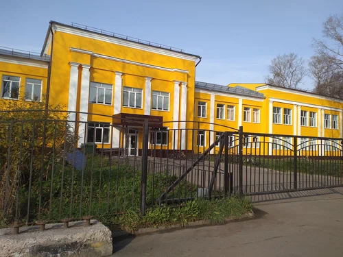
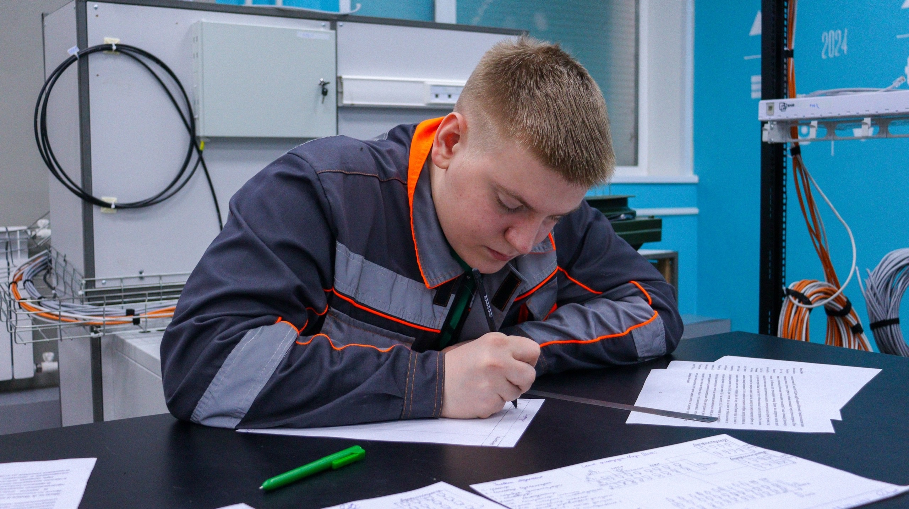
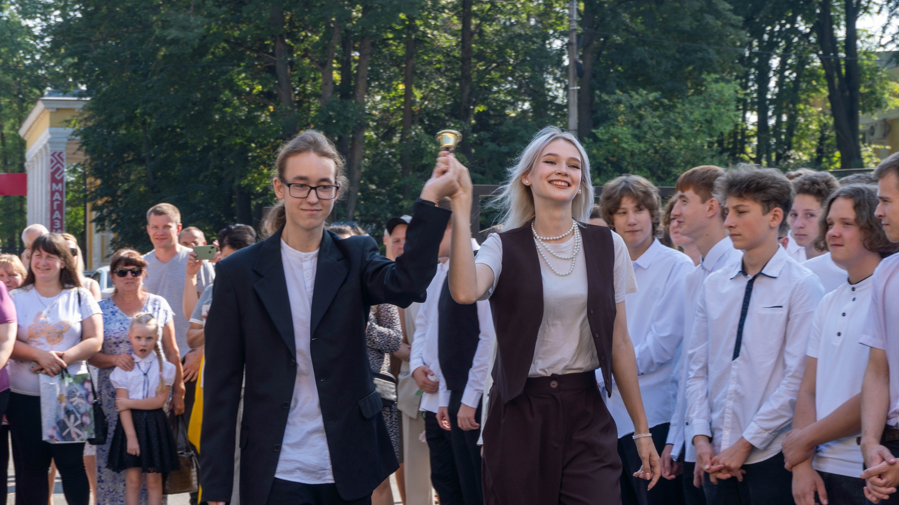
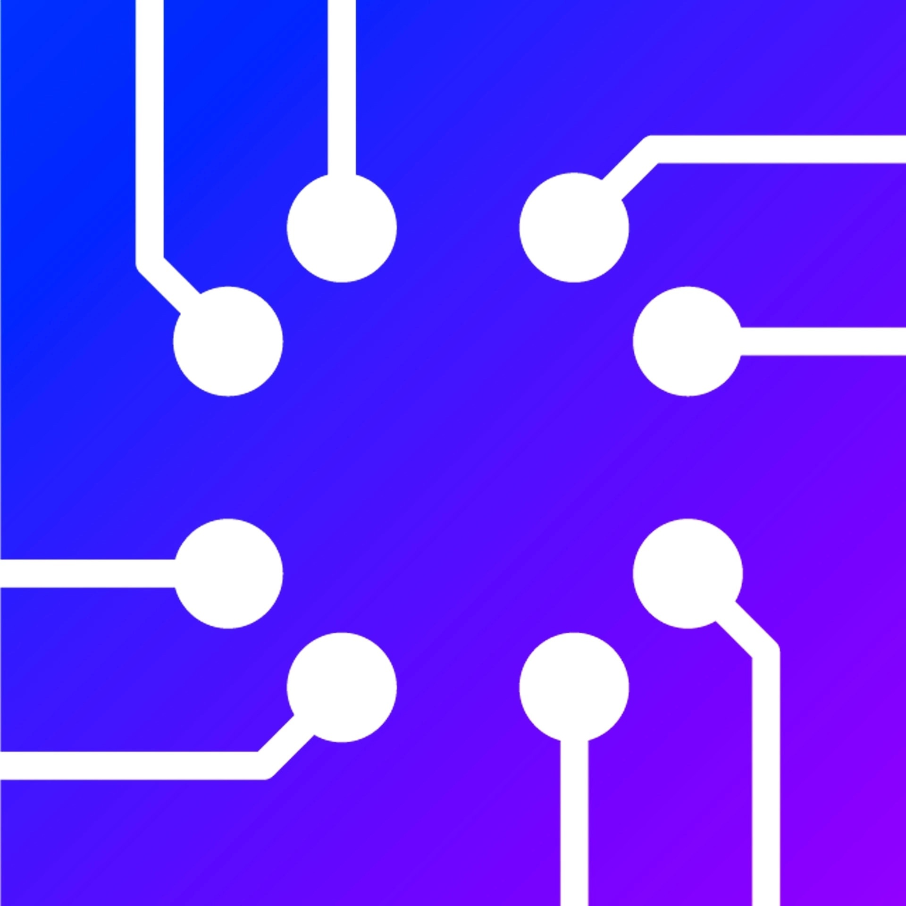

Готовое пособие по обучению
Это топчик!
1. Общая информация о колледже
Вологодский колледж связи и информационных технологий (ВКСИТ) предлагает обучение по современным направлениям в области связи и IT. Колледж располагает современным оборудованием и высококвалифицированным преподавательским составом.


Связь и телекоммуникации: подготовка специалистов в области мобильной связи, передачи данных и сетевой инфраструктуры.
Информационные технологии: изучение программирования, разработки программного обеспечения и работы с базами данных.
Компьютерные сети: проектирование, администрирование и управление компьютерными сетями.
2. Направления обучения
Связь и телекоммуникации: подготовка специалистов в области мобильной связи, передачи данных и сетевой инфраструктуры.
Информационные технологии: изучение программирования, разработки программного обеспечения и работы с базами данных.
Компьютерные сети: проектирование, администрирование и управление компьютерными сетями.
3. Учебный процесс
Формат обучения: предлагается как очное, так и заочное обучение.
Длительность обучения: обычно составляет 3-4 года в зависимости от выбранной программы.
Практика: обязательная производственная практика на предприятиях связи и IT-компаниях для получения

Студенты изучают ключевые предметы, такие как:
Основы программирования
Сети и телекоммуникации
Операционные системы
Базы данных
Безопасность информации
4. Курсы и дисциплины
Студенты изучают ключевые предметы, такие как:
Основы программирования
Сети и телекоммуникации
Операционные системы
Базы данных
Безопасность информации
5. Дополнительные возможности
Стажировки: возможность прохождения стажировок в крупных компаниях и организациях.
Конкурсы и олимпиады: участие в различных конкурсах для повышения квалификации и получения опыта.
Клубы и секции: активная студенческая жизнь с участием в клубах по интересам и научных секциях.

Документы: для поступления необходимы аттестат о среднем образовании и результаты ЕГЭ (если требуется).
Собеседование: может проводиться для некоторых специальностей.
Сроки подачи документов: уточняйте на официальном сайте колледжа.
6. Поступление
Документы: для поступления необходимы аттестат о среднем образовании и результаты ЕГЭ (если требуется).
Собеседование: может проводиться для некоторых специальностей.
Сроки подачи документов: уточняйте на официальном сайте колледжа.
7. Карьера и трудоустройство
Поддержка в трудоустройстве: колледж помогает выпускникам с трудоустройством, предоставляет информацию о вакансиях и организует ярмарки вакансий.
Партнёрства с компаниями: сотрудничество с различными предприятиями для обеспечения практики и трудоустройства студентов.

Официальный сайт колледжа: актуальная информация о программах, расписании и новостях.
Социальные сети: следите за новостями и событиями колледжа в социальных сетях для получения оперативной информации.
8. Контакты и ресурсы
Официальный сайт колледжа: актуальная информация о программах, расписании и новостях.
Социальные сети: следите за новостями и событиями колледжа в социальных сетях для получения оперативной информации.